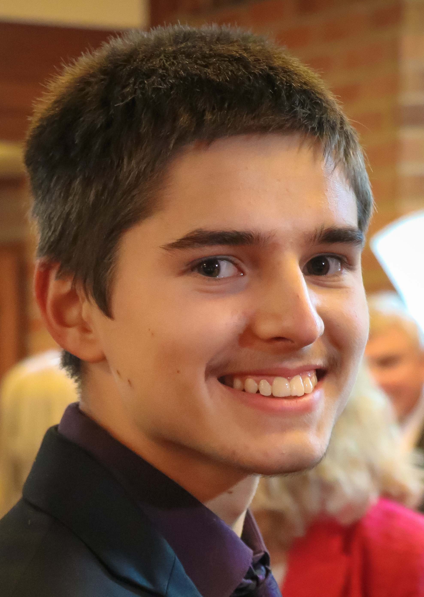

Elliot McLeish
About Me
My full name is Elliot Grant McLeish
I’m 19 years old, I like music, computer programming, philosophical conversations, swimming, running, camping, and working with others toward a common goal. However, I feel overwhelmed in large crowds.
I’m a Christian, which means I believe in showing love to everyone, regardless of their beliefs, or what they think of me.
I grew up on my grandparent’s farm in Drummond, with my parents and 6 siblings. I’m the middle child: I have two older sisters and one older brother, two younger brothers and one younger sister.
We were home-schooled, and were each given housework and household management chores. We were all brought up to be comfortable having conversations with people much older or younger than us, and to be quick to resolve disputes, so that we never had lingering resentment between us.
I now live at 284 West Plains Road, RD4 Invercargill.
Previous Education
Because I was home-schooled, I have not done NCEA, and have no official qualifications. The way my education worked was very conversation-based, with Mum or Dad reading aloud from a book to the whole family, and we would discuss it, throwing ideas back and forth. We would also have conversations after watching movies, or documentaries.
For maths and science, we each worked independently on courses online, or in textbooks: Khan Academy for maths, and Apologia textbooks for science. English, history, and geography were all group-learning subjects. Often Mum and Dad would be learning things with us.
I started learning computer programming when I was about 10. I started with Visual Basic in Microsoft Excel, and eventually managed to create minesweeper within a workbook. After that, I started learning programming on Khan Academy with their JavaScript, HTML, and CSS courses.
Since then, I’ve taught myself much more about web development through looking things up on the internet. I’ve learned how to use Node.js, and have read Bjarne Stroustrup’s book on C++ ↗, but have done little practical programming with the language.
I officially finished home-schooling at the end of 2021, but continue to actively learn and investigate various subjects.
Work Experience
I worked for a gardening company from January 25th until May 10th 2022, mowing lawns, trimming hedges, raking leaves, weeding, digging, and pruning. I enjoyed the routine of having a job and the physical nature of the work.
When everything stopped growing over the winter, there wasn’t enough work for me to be helpful, so I switched to helping my parents in their garden: trench digging, hoeing, harvesting potatoes, removing sods to make new planting ground, building fences, and trimming some of our many bushes.
Hobbies
I love music: playing the piano and singing. We regularly sing as a whole family. I also play the piano in our church.
I enjoy computer programming: I mostly build web applications with Node.js, HTML, JavaScript, and CSS, but I can also do some basics in C++.
I’m always happy to go on walking trips, or 4WD trips, preferably out in the bush, or up a mountain, or around a lake. I really enjoy camping, when I get the chance.

Outward Bound
In September of 2021, I went on a 21-day Outward Bound course in Anakiwa, near Picton. I was in a watch with 12 other teenagers. None of us had met before, but we got to know each other very well during the course.
I learned that I enjoy being part of a team, but I disliked leading, because I didn’t want to impose myself on others.
We did kayaking, sailing, waka ama, rock climbing, high ropes, hiking, and camping. It was all a lot of fun!
Every morning, there was an exercise routine, followed by a cold shower. I participated in a half-marathon, completing it in 2 hours and 11 minutes, while wearing a mask.
Skills
Driving: I have a full driver’s licence, but no car yet.
Programming: JavaScript, HTML, CSS, Node.js, SQL. (Web Development)
Handy with a spade, fork, rake, lawn mower, and hedge trimmer.
Sports: swimming (confident), skiing (intermediate), extended walking / running.
Music: I can play the piano, and have medium singing ability.
Contact Details:
Email: elliot.mcleish@gmail.com
Mobile Ph: 02 04 0888 543
Address: 284 West Plains Road, RD4 Invercargill